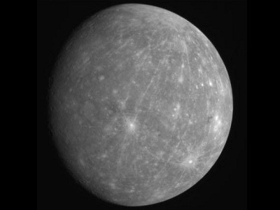
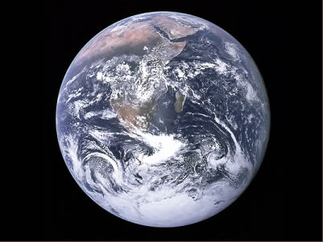
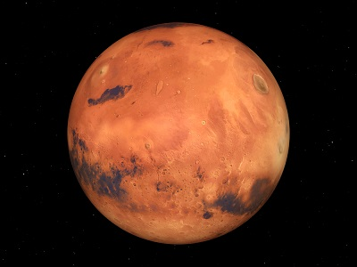

The Solar System has been broken down into two major parts by astronomers: the inner Solar System and the outer Solar System. The four terrestrial planets and all material inside of the main asteroid belt comprise the inner Solar System. The inner solar system contains Mercury, Venus, Earth and Mars. In the table below, you may click on any if the planet pictures for more information about the planets.
| Planet | About | |
|---|---|---|
| Mercury |  | Mercury, the planet nearest the Sun, is also the smallest planet in the Solar System. Only slightly larger than the Earth's moon, Mercury's surface is covered with craters. |
| Venus |  |
Fair but inhospitable Venus, a "Sister" planet to the Earth that is very different from our home. Venus does not have any moons or rings. |
| Earth |  | Earth is a beautiful blue and white ball when seen from space. The third planet from the Sun, it is the largest of the inner planets. Earth is the only planet known to support life and to have liquid water at the surface. Earth is the innermost planet in the solar system with a natural satellite – our Moon. |
| Mars |  | Mars, Earth's outer neighbor, is the fourth planet from the Sun. Mars' bright appearance and reddish color stand out in the night sky. Impressive surface features such as enormous volcanoes and valleys are frequently obscured by huge dust storms. |